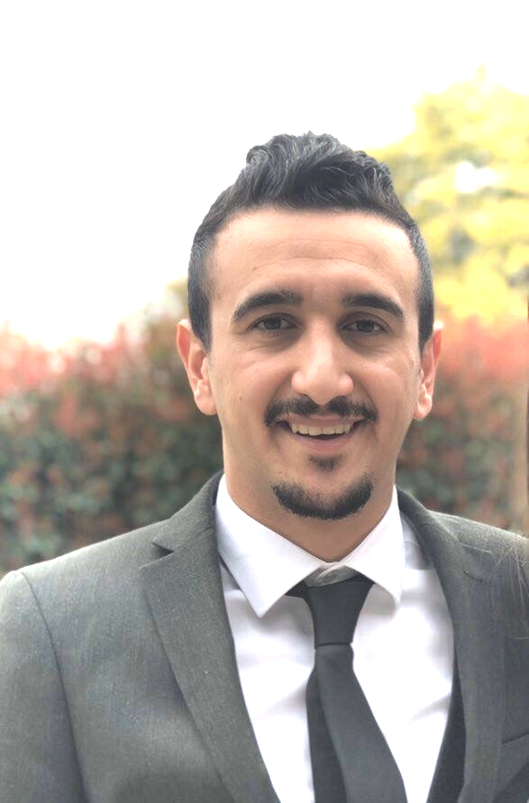

☰
About
Portfolio
Contact
Resume
More
Comming soon
ABOUT ME

Hello everyone! This is Ahmed Jalal from Iraq.
This is my offical wepage.
I'm inspired by the technology world.
I spend time learning about computers.
I like to invent things and work on difficult tasks.
I've been a friend of computers since I was a kid.
I built my first webpage when I was 14 and built a search engine when I was 16.
I never finish my projects :(
Away from computers I like swimming and traveling.
I also like coffee shops and I talk to much, but good talk.
I like funny people and I hate serious never-simily people.
I pay attention to facial expressions and I can determine what kind of a person you are from that.